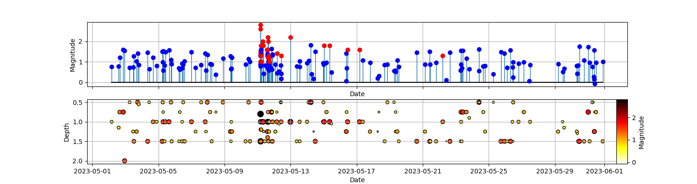

Figure 1. Extended catalog after applying a Match Filter (Liu et al. 2020). (Top) Red dots indicate the templates obtained manually using SEISAN, blue dots shows the new detections. (Bottom)
Detections as a function of depth color coded by magnitude.
No.
Date
Time
Lat.
Lon.
Dep.
Mag.
Coef.
Times_MAD
Reference
1
2023/05/01
08:58:31.140
19.3630
-99.1940
1.00
0.60
0.2559
9.3900
20230512234650.75
1
2023/05/02
04:03:36.730
19.3690
-99.1860
1.00
0.75
0.2321
9.4600
20230511074322.96
2
2023/05/02
14:13:44.400
19.3580
-99.2040
1.15
0.78
0.2597
9.2000
20230511144340.71
3
2023/05/02
15:43:11.340
19.3620
-99.2020
0.75
1.21
0.2990
9.1700
20230512040128.42
4
2023/05/02
20:50:13.970
19.3690
-99.2060
0.75
1.58
0.2529
9.0800
20230512101933.51
5
2023/05/02
22:50:23.580
19.3600
-99.2010
2.00
1.54
0.2708
9.1900
20230511042951.83
1
2023/05/03
06:05:48.840
19.3630
-99.1900
0.50
0.70
0.2517
10.2600
20230511074322.96
2
2023/05/03
11:10:24.180
19.3700
-99.2030
1.25
0.74
0.2278
9.0400
20230511043452.89
3
2023/05/03
12:19:55.980
19.3560
-99.2000
1.50
1.27
0.2623
9.1700
20230511143827.90
References
Liu, M., Li, H., Zhang, M., & Wang, T. (2020). Graphics processing unit‐based match and locate (GPU‐M&L): An improved match and locate method and its application. Seismological Research Letters, 91(2A), 1019-1029.